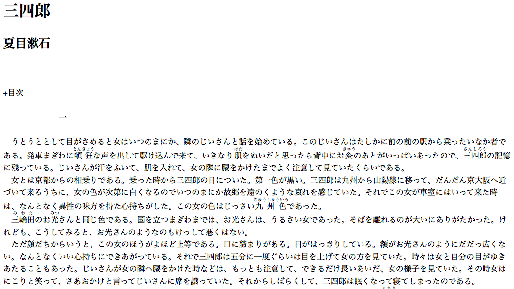

Tesseract OCR という open source の OCR エンジンを試してみた。 インストールは Homebrew でできる。
brew install tesseract英語以外の言語で OCR を行うには，教師データを用意する必要がある。 ここから jpn.traineddata をダウンロードし，適切なフォルダへ移動する。
mv ~/Downloads/jpn.traineddata /usr/local/Cellar/tesseract/3.05.01/share/tessdata/コマンドラインから以下を実行すると，
tesseract 346.png out -l jpnout.txt というファイルが生成される。 346.png は青空文庫から夏目漱石の「三四郎」をブラウザで表示し，スクリーンショットを撮ったもの。  結果は以下の通り。
三四郎
夏日漱石
+甘次
う と う と と Lて甘が萱めろと女はいつのまにか` 魔のじいさんと話を始めていろ〟 このじいさんはたLかに前の前の駅から乗ったいなか者で
ぁろ〟 発車ま ぎゎに詣~ 声を出Lて勲け込んで来て` いきなり 硫をぬいだと思った ら背中にぉ〝蘂あぁとがいっぼいぁったので` 一四}髏の記億
に残つていろ〟 じいさんヵ軒をふいて` 肌を人れて` 女の魔に硬をかけたまでょ〈注意Lて見ていたく らいでぁろ〟
女とは京都からの柑乗りでぁろ〟 乗った時から三四郎の甘についた〟 第一色ヵゞ黒い〟 三四郎は酬から川偏縞に移って、 だんだん慕太阪へ近
づいて来石ぅちに、 女の色ゑゞ次第に日く なろのでいつのまにか伽を逮のく ょうな哀れを厘じていた〟 それでこの女が車室にはいって米た時
董“ラL“ラいろ
は` なんとな〈異粒の味方を得だ心持ちがLた〟 この女の色はじっさい九 州 色でぁった〟
土"鵠のぉ晃さんと同じ色でぁろ〟 国を立つまぎゎまでは、 ぉ光さんは、 ぅ ろさい女でぁった〟 そほを離れろのカ受太ぃにぁりがたかった〟 け
れども` こぅLてみろと` ぉ光さんのょうなのもけっLて臺〈 はない〟
ただ願だちからいう と` この女のほうがょほと上等でぁろ〟 …こ締ま りがぁろ〟 甘がはっさ り Lていろ〟 額ヵゞぉ光さんのょ ラにだだっ広く な
い〟 なんとな〈いい心持ちにできぁがっていろ〟 それ 四郎は丘分に一度ぐらいは甘を上げて女の方を見ていた〟 時々は女と且分の甘がゅさ
ぁたろこと もぁつた〟 じいさんヵ汝の魔へ腰をかけた時などは` もっと も注意Lて` できろだけ長いぁいだ` 女の肝を見ていた〟 その時女は
にこ り と笑って、 さぁぉかけと菖ってじいさんに席を譲っていた〟 それからLばら 〈 Lて、 四郎は眠〈 なフて蟹てLまったのでぁ石〝精度はそれほど高くない。ルビなんかはほとんど読み取れてない。
例によって，Rからtesseractを使うためのパッケージが用意されている。
library(tesseract)しかし，日本語の教師データを使おうとしても，うまくいかない。
jpn <- tesseract(language = "jpn", datapath = "/usr/local/Cellar/tesseract/3.05.01/share/tessdata/")Failed loading language 'jpn'
Tesseract couldn't load any languages!
tesseract_engine_internal(datapath, language) でエラー:
Unable to find training data for: jpn残念。